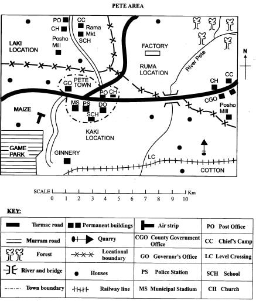
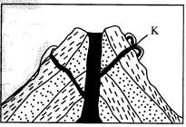
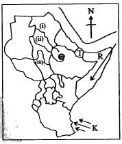

1. The lowest point in Pete area is likely to be found in the
2. What is the approximate length of the railway line in Pete area?
3. Which one of the following crops is not likely to be processed in the factory found to the North-Eastern part of Pete area?
4. The CDF office in Pete town has just received some funds from the National government; which one of the following combinations of projects is likely to be given the first priority? Construction of
5. The population distribution in Pete area can be described as
6. Which one of the following places in Pete area has the largest number of natural resources?
7. A machine has broken down at the ginnery factory and the spare part can only be bought from Pete town. The fastest means of transport to use in order to buy it will be
8. The Bantu borrowed the custom of circumcision from the
9. Which one of the following types of soil is the most common in North-Eastern Kenya?
10. Which one of the following minerals is mined near Athi River town?
11. People who trace their origin to a common ancestor form a?
12. The Amharas and the Falashas belong to language group known as?

13. The part marked K is known as?
14. Which one of the following mountains was formed through the above process?
15. Which one of the following cultural artefacts was mainly made for use in entertainment?
16. Which one of the following communities in Kenya was ruled by a council of elders in the pre-colonial period?
17. The third largest country in Eastern Africa is?
18. Which one of the following types of vegetation is mostly influenced by altitude?
19. The area where two large rivers meet and form one major river is known as?
20. A school routine refers to
21. The Great Rift Valley was formed through a process known as?
22. Which one of the following combination of rivers drain into the Indian Ocean?
23. A Member of the County Assembly (MCA) in Kenya represents?
24. Traditional medicine men used all the following parts of a tree to make medicine EXCEPT?
25. Which one of the following statements is NOT true about mangrove forests?
26. The National Flag of Kenya is important because?
27. The factors below influence the growth of a certain crop in Kenya;
(i) Altitude of over 1500m above sea level
(ii) Deep well-drained fertile soils
(iii) Cool temperatures
(iv) Rainfall of between 125mm - 1600mm per year
(v) Intensive labour during harvesting
28. The main problem facing poultry farming in Kenya is?
29. Diatomite is mined using a method known as?
30. The main advantage of a minimum and maximum thermometer is that it?
31. Which one of the following is NOT an importance of moral values?
32. The position of Nabongo among the AbaWanga people was hereditary. This means that?
33. For someone to become a Kenyan voter he or she must have attained the age of?
34. Traffic police officers mount road blocks in order to?
35. Polygamy was important in traditional Kenyan society mainly because?
36. In Kenya horticultural crops are usually exported by
37. The common factor about coffee growing in Kenya and Ethiopia is that in both countries coffee is grown ____
38. The Maasai live in temporary shelters because?
39. Tourism in Kenya can best be promoted by?
40. The first Arabs came to the Coast of East Africa to?

41. The capital city of the country marked T is?
42. The rivers marked (i), (ii) and (iii) respectively are?
43. The prevailing winds marked K are?
44. Which major language group followed the route marked R during their migration into Eastern Africa?
45. Which one of the following is a secondary need?
46. The main benefit of maize growing to the economy of Kenya is that it?
47. Which one of the following statements is true about bananas growing in Uganda? They are
48. Which one of the following countries in Eastern Africa is not crossed by the Equator?
49. The main inland fishing ground in Eastern Africa is?
50. The main problem facing natural forests in Kenya is?
51. Trade refers to?
52. Which one of the following is not a symbol of National Unity?
53. The most effective way of promoting discipline in schools is by?
54. Which one of the following is NOT a duty of the County Assembly in Kenya?
55. In order to learn the culture and traditions of a community, we study all the following EXCEPT. The type of
56. Which one of the following is a resource?
57. The main variety of coffee grown in Ethiopia is?
58. The steep sides of the Rift Valley are known as?
59. Which one of the following crops in Kenya is grown mainly for export?
60. Urbanization can be defined as?
SECTION B
CHRISTIAN RELIGIOUS EDUCATION
61. When God created human beings he made them?
62. During the time of Noah, God punished human beings because?
63. When Abraham was old he got a son known as?
64. The brothers of Joseph sold him as a slave because?
65. When God called Moses, he saw?
66. When the Egyptians tried to attack the Israelites they all
67. David was talented in?
68. When King Solomon was ruling Israel God gave him?
69. Both prophets Elijah and Elisha ____
70. The husband of Mary the mother of Jesus was?
71. Joseph and Mary took Jesus to Egypt to?
72. The temptation of Jesus teaches Christians to be?
73. Bartimaeus who was healed by Jesus in Jericho was?
74. Lazarus had two sisters. They were?
75. How many women did not have oil according to the parade taught by Jesus?
76. Jesus entered Jerusalem riding on a?
77. When Peter denied Jesus the third time _____
78. Thomas did not believe that Jesus had risen until?
79. The people persecuted by Saul were those who?
80. When Peter was in the town of Joppa he?
81. When Stephen was being stoned by the Jew’s he?
82. Ancestors are pleased in traditional African societies when people?
83. Special meals are offered in sacred places of worship in traditional African societies to?
84. Animals sacrifices are offered in traditional African communities in?
85. Ancestors are important in traditional African societies because?
86. Melissa gives a pen to another pupil in class. This shows that?
87. People who smoke cigarretes are likely to die from?
88. The best value that children should have for elderly people is?
89. Christians families worship together in order to?
90. Physically challenged children should be?
ISLAMIC RELIGIOUS EDUCATION
61. Bi anna rabbaka auhaa lahaa is a vearse from surah
62. Which surah teaches us on repentance ?
63. We seek refuge from the Lord of mankind in surah
64. Backbiting is discouraged in surah
65. Which surah talks about clear evidence ?
66. According to hadith a guest comes with his
67. The ceremony of slaughtering animals after the birth of a child is called
68. Into how many categories can hadath be grouped ?
69. The CORRECT parts involved during tayamum are
70. During hijra to Madinah the prophet was in th company of
71. Miiraj took place in the month of
72. When a person sneezes he oi she should say
73. The attribute of Allah which means ‘the creator' is
74. Muslims celebrate iddul-fitr in the month of:
75. The prayer for rain is called
76. Which of the following comprises of heavy najis ?
77. The mosque can be used to do all the following EXCEPT
78. The prophet S.A.W used to meet the representatives of the people of Yalhrib at a place called
79. Which of the following have been matched with (heir N1SAB CORRECTLY?
80. Which of the following is a cause of major hadath?
81. The prophet S.A.W used to trade with the servant of Lady Khadijah called
82. Who among the following is NOT a recipient of Zakah?
83. The EARLIEST revelation to the prophet took place in cave
84. Who among the following is a son of Nabii Adam who killed his brother?
85. The obligatory prayer performed at dusk is
86. The prophet of Allah who built an ark was
87. Who among the following was persecuted by being burnt in the hot sand?
88. Which is NOT a sacred month?
89. The sunnah prayer performed between sunrise and noon is called
90. The angel who is the guardian of paradise is